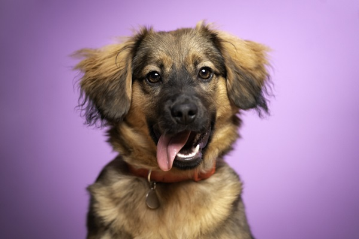
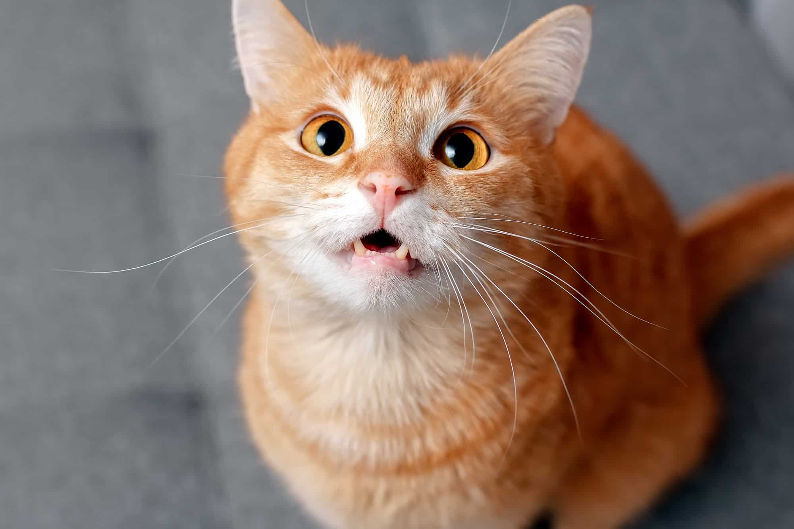
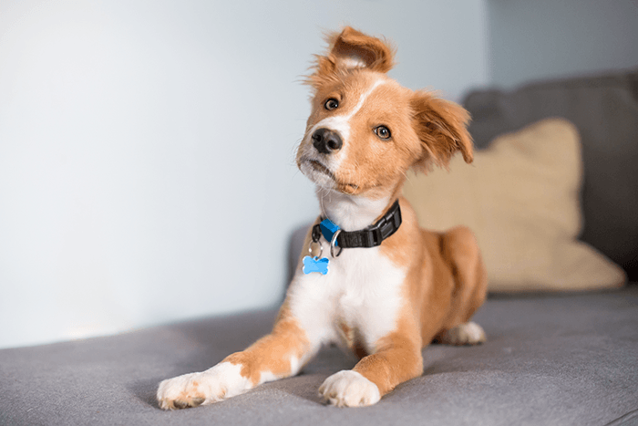
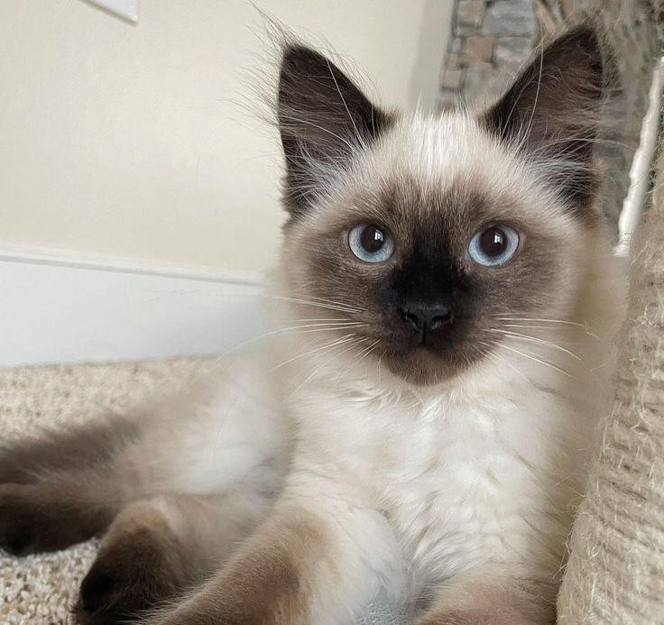

Nossa Missão
Nossa missão é transformar vidas. Oferecemos abrigo, alimentação, cuidados veterinários e muito carinho para animais em situação de rua ou maus-tratos, buscando sempre um lar definitivo onde eles possam ser felizes.
Acreditamos que todo animal merece uma segunda chance e uma família que o ame incondicionalmente.
Nossos Amigos Esperando por um Lar

Spike
Vira-lata dócil, 1,5 anos. Adora brincar e correr ao ar livre. Ótimo com crianças e outros pets. Ele é muito fotogênico.
Adotar Spike

Matilde
Gatinha laranja, 1 ano. Adora um colo e uma soneca. Ideal para quem busca companhia tranquila.
Adotar Matilde

Belinha
Vira-lata brincalhona, 8 meses. Cheia de energia e muito carinhosa. Pronta para novas aventuras.
Adotar Belinha

Romeu
Gato siamês charmoso, 2 anos. Independente, mas adora um carinho na hora certa. Porém nunca toque em sua barriga.
Adotar Romeu